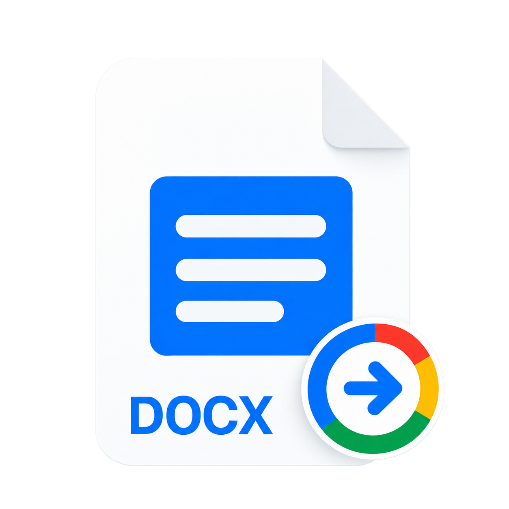

开始使用
你的第一个文件，
从头到尾。
连接 Naro 后，只需双击即可。

-
打开 Naro 并连接 Google。
从“应用程序”文件夹启动 Naro。选择 Google 登录按钮。您的浏览器将打开，以便您可以选择一个帐户并授予所请求的访问权限。登录完成后返回 Naro。
-
将 Naro 设置为默认。
使用工具栏中的帐户图标打开帐户屏幕。查找 从 Finder 打开 并选择
配置...，然后确认系统默认应用程序选择。
在 Naro 菜单 → 语言中选择您的语言。使用“关注 macOS”来匹配您的系统语言。
-
双击 Office 文档。
在 Finder 中，打开 DOC/DOCX、XLS/XLSX 或 PPT/PPTX 文件。如果您连接了多个帐户，请在头像选择器中选择一个。 Naro 将文件上传到该帐户的 Google 云端硬盘并打开相应的编辑器。
-
在浏览器中编辑。
进行更改并让 Google 保存它们。保持 Naro 运行并使您的 Mac 保持在线状态，以便保存的更改可以返回到本地文件。关掉 Naro 的窗户就可以了；退出应用程序会暂停同步。
留意兼容性。
支持最大 100 MB 的文件。复杂的 Office 格式、宏和高级功能取决于 Google 编辑器的支持。
谷歌帐户
正确的账户
对于每个文件。
使用您选择的帐户保存工作和个人文档。
WP
-
添加另一个帐户。
打开 Naro，进入帐户屏幕，然后使用
+ 按钮。使用您要添加的帐户在浏览器中完成 Google 登录。登录现有帐户会更新其授权，而不是添加重复帐户。
-
打开文件时选择头像。
一个账号，Naro 直接打开文件。如果有几个，首先会出现一个小帐户选择器。将鼠标悬停在头像上可查看帐户的名称和电子邮件，然后选择它。
-
取消而不上传。
按 Esc 键或单击选取器外部即可取消。在选择帐户之前，Naro 不会上传文件。
-
在需要时删除帐户。
使用帐户屏幕上帐户旁边的删除控件。 Naro 清除其在此 Mac 上保存的登录信息并停止同步该帐户。本地文档、历史记录、备份和 Google 云端硬盘文件仍保留。
保存与同步
保留您的更改
回家了。
了解保存的内容以及两个副本更改时会发生什么。
⇄
-
给 Google 时间来保存。
Naro 运行并联网时会检查关联文件的更改。只有在 Google 保存后才能下载更新。保存时间还取决于网络和文件大小，并非即时完成。
-
让 Naro 继续运行。
您可以关闭 Naro 窗口并继续工作。没有菜单栏图标；再次打开应用程序即可查看您最近的文件。如果您退出 Naro，请重新打开它以恢复同步。
-
如果两个副本均发生更改，请选择一个版本。
如果文件在本地和 Google 中发生更改，Naro 会保留两个版本并询问选择哪一个继续。选择 Google 版本、本地版本，或稍后决定。 Naro 还会在覆盖本地文档之前创建备份。
-
保留原始文件链接。
如果 Google 升级较旧的 DOC、XLS 或 PPT 文件，Naro 会在原始文件旁边保存现代格式的副本。使用 Google 单独的“另存为 Google 文档/表格/幻灯片”转换会创建原始 Naro 链接无法跟踪的另一个文档。
备份保留在您的 Mac 上。
它们存储在
~/Library/Application Support/Naro/Backups/ 并且不会自动删除。删除本地文档不会删除其云端硬盘副本，删除云端硬盘副本也不会删除您的本地文档。